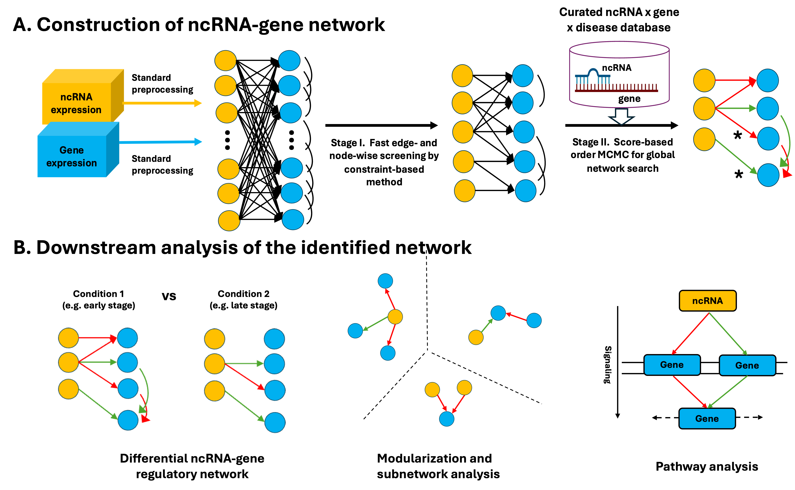

1. Overview
CAR-NET, Construction and Analysis of noncoding RNA gene regulatory NETwork, is an R Shiny application for inferring noncoding RNA-gene regulatory networks from transcriptomic data and curated ncRNA-gene-disease interaction databases.
CAR-NET supports ncRNA and coding gene expression data from bulk RNA-seq, microarray, and scRNA-seq studies. The app guides users through preprocessing, network construction, differential network analysis, module and subnetwork detection, pathway analysis, visualization, and downloadable graphical and tabular outputs.

2. Requirements
CAR-NET should be run in a clean software environment. The app uses R for Shiny, preprocessing, network inference, and pathway analysis, and it uses Python through reticulate for selected image/data handling.
Recommended base versions:
- R >= 4.0.0
- Rcpp >= 1.0.0
- Shiny >= 1.0.0
- Python 3.11 with
pandasandpillow/PIL
The current CAR-NET source imports or references these packages:
- Core app and network packages:
shiny,shinyBS,shinyjs,DT,Rcpp,RcppArmadillo,RcppGSL,ggrepel,igraph,devtools,dplyr,cluster,reticulate,MASS,BiDAG,CCA,CCP,pheatmap,EnvStats,stringr,ggplot2,graph,Rgraphviz,RBGL, andpcalg. - Pathway and annotation packages:
gplots,KEGGREST,KEGGgraph,org.Hs.eg.db,org.Mm.eg.db,org.Rn.eg.db,org.Ce.eg.db,org.Dm.eg.db,reactome.db, andbiomaRt.
Create a new conda environment
The most reproducible setup is to create a dedicated conda environment first:
conda create -y -n car-net \
-c conda-forge -c bioconda \
r-base=4.3 python=3.11 pandas pillow \
c-compiler cxx-compiler fortran-compiler make \
r-shiny r-shinybs r-shinyjs r-dt \
r-rcpp r-rcpparmadillo r-rcppgsl \
r-ggrepel r-igraph r-devtools r-dplyr r-cluster r-reticulate \
r-mass r-cca r-ccp r-pheatmap r-envstats r-stringr r-ggplot2 \
r-gplots r-biocmanager r-remotes r-rstudioapi \
bioconductor-graph bioconductor-rgraphviz bioconductor-rbgl r-pcalg
conda activate car-netPin reticulate to the conda Python and clear inherited external R library paths:
conda env config vars set RETICULATE_PYTHON="$CONDA_PREFIX/bin/python" \
R_LIBS= R_LIBS_USER= R_LIBS_SITE=
conda deactivate
conda activate car-netInstall remaining R packages
Install BiDAG from CRAN after the conda graph dependencies and compilers are available:
install.packages("BiDAG", repos = "https://cloud.r-project.org")If you plan to run pathway topology and organism annotation workflows, install the optional Bioconductor pathway packages:
if (!requireNamespace("BiocManager", quietly = TRUE)) {
install.packages("BiocManager", repos = "https://cloud.r-project.org")
}
BiocManager::install(c(
"KEGGREST", "KEGGgraph",
"org.Hs.eg.db", "org.Mm.eg.db", "org.Rn.eg.db",
"org.Ce.eg.db", "org.Dm.eg.db",
"reactome.db", "biomaRt"
), ask = FALSE, update = FALSE)Verify the environment
From the activated environment, run:
required_r <- c(
"shiny", "shinyBS", "shinyjs", "DT", "Rcpp", "RcppArmadillo",
"RcppGSL", "ggrepel", "igraph", "devtools", "dplyr", "cluster",
"reticulate", "MASS", "BiDAG", "CCA", "CCP", "pheatmap",
"EnvStats", "stringr", "ggplot2", "graph", "Rgraphviz", "RBGL",
"pcalg", "gplots"
)
missing <- required_r[!vapply(required_r, requireNamespace, logical(1), quietly = TRUE)]
if (length(missing)) {
stop("Missing R packages: ", paste(missing, collapse = ", "))
}
library(reticulate)
stopifnot(py_module_available("PIL"))
stopifnot(py_module_available("pandas"))
cat("CAR-NET environment check passed\n")3. Download And Launch
Option 1: Download ZIP
- Go to https://github.com/kehongjie/CAR-NET.
- Click Code and then Download ZIP.
- Unzip the archive and open the extracted CAR-NET folder.
Option 2: Clone with git
git clone https://github.com/kehongjie/CAR-NET.git
cd CAR-NETFrom the repository root, launch the app with:
shiny::runApp(".", port = 9987, launch.browser = TRUE)RunShiny.R launcher, run it from the repository root. Avoid hard-coded personal paths.
4. Input Data Format
CAR-NET expects matched ncRNA and coding gene expression files.
- ncRNA expression CSV: rows are ncRNAs, columns are matched samples or cells.
- Gene expression CSV: rows are coding genes, columns are the same matched samples or cells.
- Optional clinical or condition CSV: use this for condition-specific or differential regulation analysis.
CAR-NET currently expects continuous expression values. Raw count data should be normalized and transformed first, for example TPM, FPKM, or RPKM followed by log2 transformation, or another variance-stabilizing transformation.
For lncRNA names, the app supports LNCipedia, ENSG, HSALN, and HGNC input formats. For coding genes, the app supports HGNC symbol and ENSG ID input formats. For ncRNA type, choose miRNA, lncRNA, other, or mixed.
5. Data Uploading And Preprocessing Tab
Use this tab to choose input data and apply feature filtering.
- Use Choose data source to select TCGA_KIRP example or Upload my own data.
- TCGA_KIRP example lets users test the CAR-NET workflow with included example ncRNA and gene expression data. The ncRNA and gene preview tables auto-populate when this option is selected.
- Upload my own data lets users analyze custom CSV files. Custom mode requires matched ncRNA and gene expression files, with optional clinical data.
- Select the ncRNA type: miRNA, lncRNA, other, or mixed.
- If using lncRNA data, select the lncRNA naming format: LNCipedia, ENSG, HSALN, or HGNC.
- Select the ncRNA data platform: bulk RNA-seq / microarray or scRNA-seq.
- For bulk RNA-seq or microarray data, set mean and variance filtering. A looser mean cutoff is recommended for ncRNAs than for coding genes because ncRNAs are often lower expressed.
- For scRNA-seq data, set zero-count filtering, mean filtering, and variance filtering.
- Indicate whether the ncRNA data are already log2-transformed.
- Select the gene naming format: HGNC symbol or ENSG ID.
- Select the gene expression platform and apply analogous filtering options.
- Indicate whether the gene expression data are already log2-transformed.
- In custom mode, upload clinical data only when needed for condition-specific or differential analysis.
Selected tables are previewed in the main panel for ncRNA expression, gene expression, and clinical data.
6. Analysis Tab: Running CAR-NET
- Choose how to tune alpha: auto-tune or manual alpha.
- Select external prior databases when relevant: miRCancer, miRTarBase, EVLncRNA, LncRNA2Target, and LncTarD.
- Click Run CAR-NET.
In plain language, curated databases help prioritize disease-related ncRNAs and experimentally validated ncRNA-gene interactions during network search. Expected outputs include the inferred ncRNA-gene regulatory network, node and edge summaries, and network plots or tables.
7. Differential Regulation
- Enable Want to look into differential regulation?
- Enter the condition variable name from the clinical data.
- Enter the reference level. When possible, use the larger or more stable group as the reference.
- Run CAR-NET to construct the initial reference network.
- In Part C: Differential Regulation, enter the comparison level.
- Click Update the network.
CAR-NET compares the reference network with the updated condition-specific network to identify gained, lost, or changed regulatory edges.
8. Module Detection
- Choose the minimum module size.
- Click Detect module.
- Select a module to display.
Modules represent subnetworks or communities of ncRNAs and genes that may act together. Larger or biologically coherent modules can help prioritize follow-up analysis.
9. Pathway Analysis
CAR-NET can run pathway analysis for all genes in the network or for genes in a selected module.
- GO
- KEGG
- Reactome
- Biocarta
Select one or more pathway resources, then run pathway analysis for all network genes or for selected module genes. Outputs include enriched pathways, plots, and tables.
10. Example Workflows From The Manuscript
These examples provide concise settings inspired by manuscript case studies. They are not complete data-processing protocols.
A. Bulk lncRNA Brain Development
- ncRNA type: lncRNA
- Platform: bulk RNA-seq / microarray
- Expression scale: FPKM, log2 or other continuous scale
- Example filtering: lncRNA mean FPKM >= 1, gene mean FPKM >= 10
- Prior databases: EVLncRNA, LncRNA2Target, LncTarD
B. TCGA KIRP miRNA Early Vs Late
- ncRNA type: miRNA
- Platform: bulk RNA-seq / microarray
- Expression scale: RPM, log2 transformed
- Example filtering: miRNA mean RPM >= 0.3, gene mean RPM >= 5
- Condition: early vs late stage
- Prior databases: miRCancer, miRTarBase
C. Smart-seq-total Mixed Single-cell
- ncRNA type: mixed
- Platform: scRNA-seq
- Filtering: mean CPM and zero-count filtering
- Prior databases: optional or none if no relevant cell-line-specific prior is available
11. Interpreting Results
ncRNA -> gene edges are the primary regulatory backbone of the CAR-NET output. Gene-gene edges represent direct gene-gene communications in the semi-bipartite graph.
If edge width or probability is shown, interpret it as evidence or posterior support from the model. Larger modules and enriched pathways can help prioritize biological interpretation and follow-up experiments.
12. Troubleshooting
- App cannot find CSS or images: verify that static assets are in the
www/directory or that resource paths are configured correctly. - Package installation errors: install
BiocManagerfirst, then Bioconductor packages, then CRAN packages. - Uploaded file is not shown correctly: check the CSV delimiter, row names, and headers.
- Sample or cell names do not match: make column names consistent across ncRNA, gene, and clinical data.
- Raw counts used directly: normalize and transform to continuous values first.
- Large files fail:
server.Rsetsshiny.maxRequestSizeto 100 MB. - Analysis runs slowly: use filtering to reduce the number of features. Consider manual alpha only if you understand the parameter.